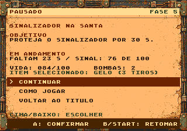
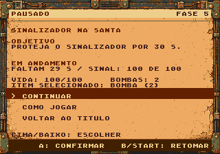

PLAGUEFALL / PAINEL DA RESISTÊNCIA / IMPLEMENTADO
A direção aprovada, agora dentro do jogo.
Papel gasto, metal e cobre em preparação, pause, ajuda e diálogos. À direita, capturas reais da ROM; no pause, os valores vêm da partida.
Proposta visual aprovada
Implementado · captura da ROM
20 localidades em NTSC/PAL6 páginas de ajudaEstado congelado no pause/guiaGráficos restaurados na retomada23 transições do mapa por sistema
Continuar é a opção inicial. O guia retorna ao pause; B/START retomam. Sair exige confirmação com continuar selecionado. Os atalhos de pular fase estão desativados na ROM normal.